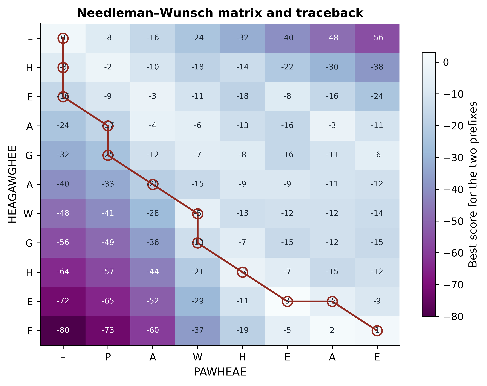
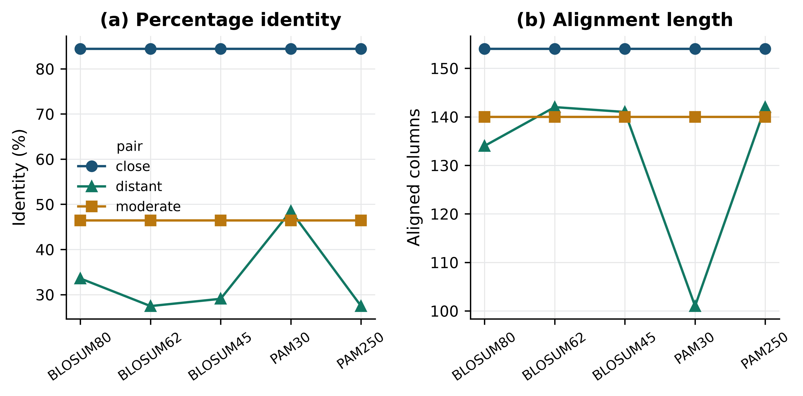
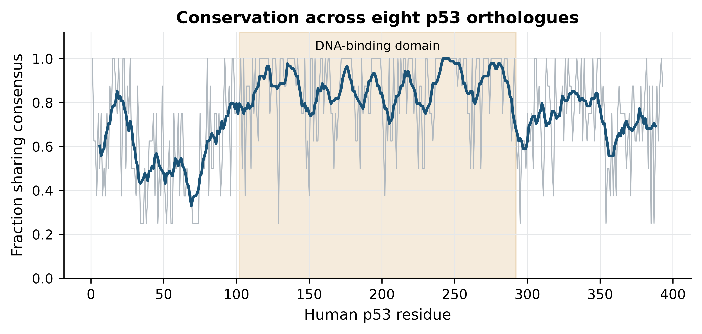
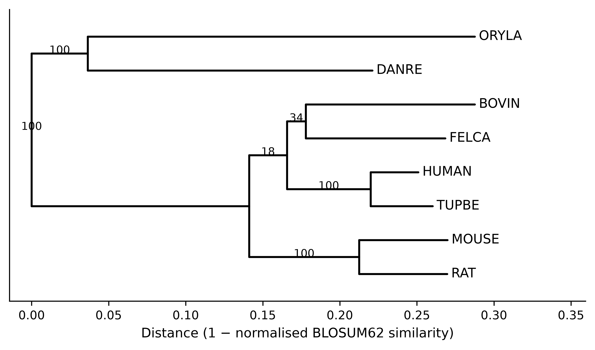

import sys; sys.path.insert(0, "..")
from pybfx import book_data, style, PALETTE
style()4 Sequence alignment and what it tells you
After working through this chapter you will be able to
- distinguish homology from similarity, and orthologues from paralogues, and state which of the three a sequence comparison can actually establish
- derive and implement the Needleman–Wunsch recursion, and read a score matrix and its traceback
- choose between global and local alignment, and between linear and affine gap penalties, for a stated biological question
- explain how PAM and BLOSUM matrices are constructed and demonstrate that the choice of matrix changes the alignment you obtain
- run a BLAST search against a database you built yourself and interpret bit scores and E-values correctly
- build a multiple sequence alignment with MAFFT, quantify conservation in it, and infer and criticise a distance-based tree
Almost everything in bioinformatics reduces to a comparison. Is this gene the one that causes the disease? Is this virus related to the one from last month? Does this protein have the active site that would make it a drug target? None of those questions can be answered by looking at a sequence on its own. They are answered by lining one sequence up against another and asking how the differences are distributed — which is to say, by alignment.
Alignment is therefore the algorithmic heart of the subject, and it is worth understanding rather than invoking. A great many published errors come from treating an aligner as an oracle: accepting a percentage identity without knowing how many columns it was computed over, reporting a BLAST hit without reading its E-value, or inferring that two proteins share a function because a multiple alignment coloured some columns the same. Each of those mistakes is prevented by knowing what the algorithm actually optimises.
This chapter builds the machinery from the bottom. You will implement Needleman–Wunsch yourself in about twenty lines of Python, print the score matrix, and follow the traceback that recovers the alignment; you will then see where Smith–Waterman differs by one line and why that line changes the question being asked. From there you will work with real sequences: the four bundled globins (data/proteins/globins.fasta — human haemoglobin alpha and beta, human myoglobin and sperm whale myoglobin) for pairwise work, and the eight bundled p53 orthologues (data/proteins/p53-orthologs.fasta, spanning human to medaka) for multiple alignment and tree building. You will build a BLAST database from those sequences and search it, and you will finish with a neighbour-joining tree carrying bootstrap support values that you computed, not assumed.
4.1 Setting up
The chapter runs two external programs, BLAST+ and MAFFT, both of which are pinned in the book’s environment.yml. Intermediate files are written to a temporary directory so that nothing is left behind in your project.
import os
import io
import subprocess
import tempfile
work_dir = tempfile.mkdtemp(prefix="chapter04_")
print("working directory:", os.path.basename(work_dir))
#> working directory: chapter04_2y7hmo5q4.2 Homology, similarity, and the words that get them confused
Similarity is a measurement. Two sequences are 38% identical over 120 aligned columns; that is an observation you can repeat. Homology is a historical claim: it asserts that two sequences descend from a common ancestral sequence. Homology is not a quantity. Sequences are homologous or they are not, and no sequence is “40% homologous” to another, however often the phrase appears in print. What similarity gives you is evidence for homology, and the strength of that evidence depends on how much similarity you observed and how long the region was.
Homologous sequences come in two kinds that are constantly conflated. Orthologues are homologues separated by a speciation event: human TP53 and mouse Trp53 are orthologues, because the gene was present in the last common ancestor and the lineages diverged. Paralogues are homologues separated by a gene duplication within a lineage: human haemoglobin alpha and human haemoglobin beta are paralogues, products of an ancient duplication of an ancestral globin. The distinction is not pedantry. Orthologues usually retain the ancestral function, which is why annotation is routinely transferred between them; paralogues are free to diverge in function, which is why transferring annotation between them is how a gene acquires a wrong name that then propagates through every database that copies it.
The reason similarity cannot simply be read as homology is that short stretches of high identity arise by chance. The following experiment makes the point with the bundled globins. Human haemoglobin alpha and human myoglobin are genuine distant homologues; we compare their local alignment with local alignments of haemoglobin alpha against 50 shuffled versions of myoglobin, which have exactly the same amino acid composition but no shared history.
import random
import statistics
from Bio import SeqIO
from Bio.Align import PairwiseAligner, substitution_matrices
globins = {record.id.split("|")[2]: record
for record in SeqIO.parse(book_data("proteins", "globins.fasta"), "fasta")}
blosum62 = substitution_matrices.load("BLOSUM62")
def percent_identity(alignment):
"""Percentage identity over aligned columns only, ignoring gap columns."""
pairs = [(x, y) for x, y in zip(alignment[0], alignment[1])
if x != "-" and y != "-"]
return 100 * sum(x == y for x, y in pairs) / len(pairs)
aligner = PairwiseAligner(mode="local", substitution_matrix=blosum62,
open_gap_score=-11, extend_gap_score=-1)
genuine = aligner.align(globins["HBA_HUMAN"].seq, globins["MYG_HUMAN"].seq)[0]
print(f"HBA vs myoglobin: score {genuine.score:.0f}, "
f"{percent_identity(genuine):.1f}% identity over {len(genuine[0])} columns")
#> HBA vs myoglobin: score 124, 27.5% identity over 148 columnsrandom.seed(7)
null_scores, null_identities, null_lengths = [], [], []
for _ in range(50):
shuffled = "".join(random.sample(str(globins["MYG_HUMAN"].seq),
len(globins["MYG_HUMAN"].seq)))
decoy = aligner.align(globins["HBA_HUMAN"].seq, shuffled)[0]
null_scores.append(decoy.score)
null_identities.append(percent_identity(decoy))
null_lengths.append(len(decoy[0]))
print(f"shuffled decoys: mean score {statistics.mean(null_scores):.0f} "
f"(best {max(null_scores):.0f})")
#> shuffled decoys: mean score 30 (best 42)
print(f" mean identity {statistics.mean(null_identities):.1f}% "
f"(best {max(null_identities):.1f}%)")
#> mean identity 41.8% (best 87.5%)
print(f" mean alignment length {statistics.mean(null_lengths):.0f} columns")
#> mean alignment length 25 columnsThe genuine comparison scores 124; the best of 50 decoys scores 42. The score separates signal from noise cleanly. Percentage identity does not: the decoys average around 42% identity, and the best of them reaches 87.5%, because a local aligner on random sequence finds a short stretch that happens to match and stops there. Those high identities are computed over a handful of columns.
A percentage identity without a length is not a result
Always report identity together with the number of aligned columns, and treat any identity computed over fewer than about 50 residues as uninformative. The region between roughly 20% and 35% identity over a protein-length alignment is known as the twilight zone: real homologues live there, and so do convincing accidents. Deciding between them needs a statistical model, which is what the E-value in Section 4.7 provides, or a profile method that uses information from a whole family.
4.3 Global alignment by dynamic programming
An alignment is a choice of which residues to place opposite which, with gaps allowed. For two sequences of length 150 the number of possible alignments is astronomically large, so an exhaustive search is impossible — and yet the optimal alignment can be found in time proportional to the product of the lengths. The trick, published by Needleman and Wunsch, is the observation that the best alignment of two sequences ends in exactly one of three ways (Needleman and Wunsch 1970).
Write \(S(i, j)\) for the score of the best alignment of the first \(i\) residues of sequence \(a\) against the first \(j\) residues of sequence \(b\). Whatever that best alignment is, its last column must be one of: \(a_i\) opposite \(b_j\); \(a_i\) opposite a gap; or a gap opposite \(b_j\). Each possibility reduces the problem to a smaller one whose answer is already known, which gives the recursion
\[ S(i, j) = \max \begin{cases} S(i-1, j-1) + s(a_i, b_j) & \text{(align $a_i$ with $b_j$)} \\ S(i-1, j) + g & \text{(gap in $b$)} \\ S(i, j-1) + g & \text{(gap in $a$)} \end{cases} \]
where \(s(\cdot,\cdot)\) is the substitution score for a pair of residues and \(g\) is the gap penalty. The first row and column are initialised with cumulative gap penalties, because aligning a prefix against nothing costs one gap per residue. Filling the table is then a double loop.
import numpy as np
def fill_matrix(seq_a, seq_b, matrix, gap):
"""Fill the Needleman-Wunsch score matrix for a linear gap penalty."""
n, m = len(seq_a), len(seq_b)
score = np.zeros((n + 1, m + 1))
score[:, 0] = np.arange(n + 1) * gap # prefix of a against nothing
score[0, :] = np.arange(m + 1) * gap # prefix of b against nothing
for i in range(1, n + 1):
for j in range(1, m + 1):
score[i, j] = max(score[i - 1, j - 1] + matrix[seq_a[i - 1], seq_b[j - 1]],
score[i - 1, j] + gap,
score[i, j - 1] + gap)
return scoreThe matrix holds scores, not the alignment. Recovering the alignment means starting at the bottom-right corner and walking back, at each step asking which of the three predecessors the cell’s value actually came from. A diagonal step emits an aligned pair, a vertical step emits a gap in the second sequence, and a horizontal step a gap in the first.
def traceback(score, seq_a, seq_b, matrix, gap):
"""Walk back from the corner, recovering the alignment and the path taken."""
i, j = len(seq_a), len(seq_b)
top, bottom, path = "", "", [(i, j)]
while i > 0 or j > 0:
if i and j and score[i, j] == score[i - 1, j - 1] + matrix[seq_a[i - 1], seq_b[j - 1]]:
top, bottom, i, j = seq_a[i - 1] + top, seq_b[j - 1] + bottom, i - 1, j - 1
elif i and score[i, j] == score[i - 1, j] + gap:
top, bottom, i = seq_a[i - 1] + top, "-" + bottom, i - 1
else:
top, bottom, j = "-" + top, seq_b[j - 1] + bottom, j - 1
path.append((i, j))
return top, bottom, path[::-1]Twenty lines of code, and the optimality is guaranteed: no other alignment of these two sequences under this scoring scheme scores higher. That guarantee is what distinguishes dynamic programming from the heuristics later in the chapter.
We run it on two short peptides, scoring with BLOSUM50 and a gap penalty of −8, which is the parameter set used in the classical worked example of this algorithm.
blosum50 = substitution_matrices.load("BLOSUM50")
GAP = -8
seq_a, seq_b = "HEAGAWGHEE", "PAWHEAE"
score = fill_matrix(seq_a, seq_b, blosum50, GAP)
top, bottom, path = traceback(score, seq_a, seq_b, blosum50, GAP)
print(top)
#> HEAGAWGHE-E
print("".join("|" if x == y else " " for x, y in zip(top, bottom)))
#> || || |
print(bottom)
#> --P-AW-HEAE
print(f"optimal global score: {score[-1, -1]:.0f}")
#> optimal global score: 1Now print the table itself. Every cell is the best score achievable for the pair of prefixes that index it, so reading along the bottom row tells you the best score for aligning all of HEAGAWGHEE against progressively longer prefixes of PAWHEAE.
header = " -" + "".join(f"{residue:>6}" for residue in seq_b)
print(header)
#> - P A W H E A E
for i, row in enumerate(score):
label = "-" if i == 0 else seq_a[i - 1]
print(f"{label:>3}" + "".join(f"{value:6.0f}" for value in row))
#> - 0 -8 -16 -24 -32 -40 -48 -56
#> H -8 -2 -10 -18 -14 -22 -30 -38
#> E -16 -9 -3 -11 -18 -8 -16 -24
#> A -24 -17 -4 -6 -13 -16 -3 -11
#> G -32 -25 -12 -7 -8 -16 -11 -6
#> A -40 -33 -20 -15 -9 -9 -11 -12
#> W -48 -41 -28 -5 -13 -12 -12 -14
#> G -56 -49 -36 -13 -7 -15 -12 -15
#> H -64 -57 -44 -21 -3 -7 -15 -12
#> E -72 -65 -52 -29 -11 3 -5 -9
#> E -80 -73 -60 -37 -19 -5 2 1Figure 4.1 shows the same numbers as a heat map with the traceback path drawn on top, which is the quickest way to see what the algorithm is doing: the path is a monotone staircase from the top-left to the bottom-right corner, and every diagonal segment of it is a block of aligned residues.
import matplotlib.pyplot as plt
fig, ax = plt.subplots(figsize=(6.4, 5.0))
image = ax.imshow(score, cmap="BuPu_r", aspect="auto")
for i in range(score.shape[0]):
for j in range(score.shape[1]):
ax.text(j, i, f"{score[i, j]:.0f}", ha="center", va="center", fontsize=7,
color="white" if score[i, j] < -40 else "#1B2631")
#> Text(0, 0, '0')
#> Text(1, 0, '-8')
#> Text(2, 0, '-16')
#> Text(3, 0, '-24')
#> Text(4, 0, '-32')
#> Text(5, 0, '-40')
#> Text(6, 0, '-48')
#> Text(7, 0, '-56')
#> Text(0, 1, '-8')
#> Text(1, 1, '-2')
#> Text(2, 1, '-10')
#> Text(3, 1, '-18')
#> Text(4, 1, '-14')
#> Text(5, 1, '-22')
#> Text(6, 1, '-30')
#> Text(7, 1, '-38')
#> Text(0, 2, '-16')
#> Text(1, 2, '-9')
#> Text(2, 2, '-3')
#> Text(3, 2, '-11')
#> Text(4, 2, '-18')
#> Text(5, 2, '-8')
#> Text(6, 2, '-16')
#> Text(7, 2, '-24')
#> Text(0, 3, '-24')
#> Text(1, 3, '-17')
#> Text(2, 3, '-4')
#> Text(3, 3, '-6')
#> Text(4, 3, '-13')
#> Text(5, 3, '-16')
#> Text(6, 3, '-3')
#> Text(7, 3, '-11')
#> Text(0, 4, '-32')
#> Text(1, 4, '-25')
#> Text(2, 4, '-12')
#> Text(3, 4, '-7')
#> Text(4, 4, '-8')
#> Text(5, 4, '-16')
#> Text(6, 4, '-11')
#> Text(7, 4, '-6')
#> Text(0, 5, '-40')
#> Text(1, 5, '-33')
#> Text(2, 5, '-20')
#> Text(3, 5, '-15')
#> Text(4, 5, '-9')
#> Text(5, 5, '-9')
#> Text(6, 5, '-11')
#> Text(7, 5, '-12')
#> Text(0, 6, '-48')
#> Text(1, 6, '-41')
#> Text(2, 6, '-28')
#> Text(3, 6, '-5')
#> Text(4, 6, '-13')
#> Text(5, 6, '-12')
#> Text(6, 6, '-12')
#> Text(7, 6, '-14')
#> Text(0, 7, '-56')
#> Text(1, 7, '-49')
#> Text(2, 7, '-36')
#> Text(3, 7, '-13')
#> Text(4, 7, '-7')
#> Text(5, 7, '-15')
#> Text(6, 7, '-12')
#> Text(7, 7, '-15')
#> Text(0, 8, '-64')
#> Text(1, 8, '-57')
#> Text(2, 8, '-44')
#> Text(3, 8, '-21')
#> Text(4, 8, '-3')
#> Text(5, 8, '-7')
#> Text(6, 8, '-15')
#> Text(7, 8, '-12')
#> Text(0, 9, '-72')
#> Text(1, 9, '-65')
#> Text(2, 9, '-52')
#> Text(3, 9, '-29')
#> Text(4, 9, '-11')
#> Text(5, 9, '3')
#> Text(6, 9, '-5')
#> Text(7, 9, '-9')
#> Text(0, 10, '-80')
#> Text(1, 10, '-73')
#> Text(2, 10, '-60')
#> Text(3, 10, '-37')
#> Text(4, 10, '-19')
#> Text(5, 10, '-5')
#> Text(6, 10, '2')
#> Text(7, 10, '1')
rows, columns = zip(*path)
ax.plot(columns, rows, color="#922B21", linewidth=1.6, marker="o",
markersize=9, markerfacecolor="none", markeredgewidth=1.3)
#> [<matplotlib.lines.Line2D object at 0x14b387190>]
ax.set_xticks(range(len(seq_b) + 1), ["–"] + list(seq_b))
#> [<matplotlib.axis.XTick object at 0x12f7e5e90>, <matplotlib.axis.XTick object at 0x12f7cf450>, <matplotlib.axis.XTick object at 0x12f7dd790>, <matplotlib.axis.XTick object at 0x14b44d1d0>, <matplotlib.axis.XTick object at 0x14b44f990>, <matplotlib.axis.XTick object at 0x14b4427d0>, <matplotlib.axis.XTick object at 0x14b458810>, <matplotlib.axis.XTick object at 0x14b441690>]
ax.set_yticks(range(len(seq_a) + 1), ["–"] + list(seq_a))
#> [<matplotlib.axis.YTick object at 0x12f7c6210>, <matplotlib.axis.YTick object at 0x14b43cdd0>, <matplotlib.axis.YTick object at 0x14b32a710>, <matplotlib.axis.YTick object at 0x14b46ded0>, <matplotlib.axis.YTick object at 0x14b4714d0>, <matplotlib.axis.YTick object at 0x14b471c90>, <matplotlib.axis.YTick object at 0x14b473bd0>, <matplotlib.axis.YTick object at 0x14b469b90>, <matplotlib.axis.YTick object at 0x14b46ba50>, <matplotlib.axis.YTick object at 0x14b475990>, <matplotlib.axis.YTick object at 0x14b469410>]
ax.set(xlabel="PAWHEAE", ylabel="HEAGAWGHEE",
title="Needleman–Wunsch matrix and traceback")
#> [Text(0.5, 0, 'PAWHEAE'), Text(0, 0.5, 'HEAGAWGHEE'), Text(0.5, 1.0, 'Needleman–Wunsch matrix and traceback')]
ax.grid(False)
fig.colorbar(image, ax=ax, shrink=0.82,
label="Best score for the two prefixes")
#> <matplotlib.colorbar.Colorbar object at 0x12f7cdad0>
fig.tight_layout()
The alignment that comes out, HEAGAWGHE-E against --P-AW-HEAE, scores 1. Two features of the picture are worth dwelling on. First, the top-left region is dark because aligning a long prefix against nothing is heavily penalised; the algorithm therefore avoids paths that run along the edges. Second, the single bright diagonal running through the AW and HE cells is the signal in this comparison, and the traceback follows it. The gaps are placed wherever moving off that diagonal is cheaper than mismatching.
4.4 Local alignment, and when each is correct
Needleman–Wunsch aligns the sequences end to end, which is the right question when the two sequences are expected to correspond along their whole length — two orthologous proteins of similar size, two assemblies of the same genome, a read against the reference window it came from. It is the wrong question when one sequence is a fragment of the other, when the two share only a domain, or when you are searching a database and most of the target has nothing to do with the query.
Smith and Waterman modified the recursion by one term (Smith and Waterman 1981). Adding zero as a fourth option,
\[ S(i, j) = \max\{0,\; S(i-1,j-1) + s(a_i,b_j),\; S(i-1,j) + g,\; S(i,j-1) + g\}, \]
means that a region whose alignment has become unprofitable is abandoned rather than carried forward, and the first row and column are initialised to zero rather than to cumulative penalties. The alignment is then read from the highest cell anywhere in the matrix back to the first zero. Those two changes convert the algorithm from “align everything” to “find the best-scoring segment pair”, which is the operation every database search tool approximates.
def smith_waterman(seq_a, seq_b, matrix, gap):
"""Local alignment: the same recursion, floored at zero."""
n, m = len(seq_a), len(seq_b)
score = np.zeros((n + 1, m + 1))
for i in range(1, n + 1):
for j in range(1, m + 1):
score[i, j] = max(0,
score[i - 1, j - 1] + matrix[seq_a[i - 1], seq_b[j - 1]],
score[i - 1, j] + gap,
score[i, j - 1] + gap)
best = np.unravel_index(np.argmax(score), score.shape)
return score, best
local_score, best_cell = smith_waterman(seq_a, seq_b, blosum50, GAP)
print(f"best local score {local_score[best_cell]:.0f} at cell {best_cell} "
f"(global score was {score[-1, -1]:.0f})")
#> best local score 28 at cell (np.int64(9), np.int64(5)) (global score was 1)
print(f"negative cells in the global matrix: {int((score < 0).sum())} of {score.size}")
#> negative cells in the global matrix: 84 of 88
print(f"negative cells in the local matrix: {int((local_score < 0).sum())}")
#> negative cells in the local matrix: 0The local score of 28 is much higher than the global score of 1, because the local algorithm is allowed to report only the AWGHE/AW-HE region and discard the rest. That is not a better alignment of the same thing; it is an alignment of a different thing. Choosing between them is a biological decision: use global alignment when you believe the sequences correspond throughout, and local alignment when you believe only part of them does.
A quick rule for choosing the mode
Ask what you would do if the two sequences shared only 30 residues out of 300. If the right answer is “report that 30-residue match”, you want local alignment. If the right answer is “report that these sequences do not correspond”, you want global. Biopython’s PairwiseAligner switches between them with mode="global" and mode="local", and most errors come from leaving the mode at whatever it was for the previous analysis.
4.5 Gap models
The implementations above charge a fixed penalty \(g\) for every gap position, a linear gap penalty. Biologically that is wrong. Insertions and deletions occur as events, and a single event can remove six residues as easily as one. A linear penalty charges six times as much for the six-residue deletion as for the one-residue deletion, and so prefers to explain the data with many short gaps scattered through the alignment rather than one long gap in the loop where the indel actually happened.
An affine gap penalty charges a large cost \(d\) to open a gap and a small cost \(e\) to extend it, so that a gap of length \(k\) costs \(d + (k-1)e\) (Gotoh 1982). The classical BLAST protein defaults, \(d = 11\) and \(e = 1\), make a six-residue gap cost 16 rather than 66. The effect on real sequences is easy to see.
import re
def gap_summary(alignment):
"""Count gap runs and the longest run in a pairwise alignment."""
runs = re.findall(r"-+", str(alignment[0])) + re.findall(r"-+", str(alignment[1]))
return len(runs), max((len(run) for run in runs), default=0)
for name, (open_score, extend_score) in {"linear (-4 each)": (-4, -4),
"affine (-11, -1)": (-11, -1)}.items():
model = PairwiseAligner(mode="global", substitution_matrix=blosum62,
open_gap_score=open_score, extend_gap_score=extend_score)
alignment = model.align(globins["HBA_HUMAN"].seq, globins["MYG_HUMAN"].seq)[0]
n_gaps, longest = gap_summary(alignment)
print(f"{name:<18} score {alignment.score:6.0f} columns {len(alignment[0]):4d} "
f"gap runs {n_gaps:2d} longest {longest} identity {percent_identity(alignment):.1f}%")
#> linear (-4 each) score 126 columns 158 gap runs 15 longest 3 identity 31.9%
#> affine (-11, -1) score 108 columns 154 gap runs 2 longest 6 identity 27.5%With a linear penalty the aligner opens 15 separate gaps, none longer than three residues; with an affine penalty it opens two, one of them six residues long. The affine alignment is the one that corresponds to a plausible evolutionary history: haemoglobin and myoglobin differ by a small number of indel events in surface loops, not by fifteen. This is why every production aligner — BLAST, MAFFT, BWA, minimap2 (Li 2018) — uses affine or piecewise-affine gap costs, and why the two numbers that control it are worth setting deliberately rather than leaving at a default you have not read.
4.6 Substitution matrices
Everything above assumed a function \(s(a_i, b_j)\) that scores a pair of residues. For DNA a simple match/mismatch score is often adequate. For protein it is not, because amino acid substitutions are not equally likely: leucine-for-isoleucine is conservative and common, tryptophan-for-aspartate is neither. A substitution matrix encodes those asymmetries as log-odds scores. For a pair of residues \(a\) and \(b\),
\[ s(a, b) = \frac{1}{\lambda} \log \frac{q_{ab}}{p_a p_b}, \]
where \(q_{ab}\) is the frequency with which \(a\) and \(b\) are seen aligned in trusted alignments of related sequences, \(p_a\) and \(p_b\) are their background frequencies, and \(\lambda\) is a scale factor that lets the result be rounded to integers. A positive score means the pair occurs in homologues more often than chance would produce; a negative score means less often. The scores are therefore statements about evolution, not about chemistry, although the two largely agree.
The two families differ in how \(q_{ab}\) was estimated. PAM matrices were built by counting substitutions in alignments of very closely related proteins, fitting a Markov model of accepted point mutations, and extrapolating that model to greater evolutionary distances (Dayhoff, Schwartz, and Orcutt 1978). PAM1 corresponds to one accepted point mutation per hundred residues; PAM250 is that model multiplied by itself 250 times, and is intended for distant comparisons. BLOSUM matrices were built directly from observed ungapped blocks of aligned protein families, with the blocks clustered at a chosen identity threshold to avoid over-weighting close relatives (Henikoff and Henikoff 1992). BLOSUM62 was derived from blocks clustered at 62% identity, BLOSUM80 at 80%. The crucial and frequently misremembered consequence is that the numbering runs in opposite directions: a high BLOSUM number suits close sequences, whereas a high PAM number suits distant ones.
A small excerpt makes the content of a matrix concrete.
residues = "WLIKDR"
print(" " + "".join(f"{residue:>4}" for residue in residues))
#> W L I K D R
for row_residue in residues:
print(f"{row_residue:>3}" + "".join(f"{int(blosum62[row_residue, column]):4d}"
for column in residues))
#> W 11 -2 -3 -3 -4 -3
#> L -2 4 2 -2 -4 -2
#> I -3 2 4 -3 -3 -3
#> K -3 -2 -3 5 -1 2
#> D -4 -4 -3 -1 6 -2
#> R -3 -2 -3 2 -2 5Tryptophan against itself scores 11, the highest value in BLOSUM62, because tryptophan is rare and a conserved tryptophan is therefore strong evidence of homology. Leucine against isoleucine scores 2 and lysine against arginine scores 2: both are conservative exchanges between residues with similar properties. Aspartate against tryptophan scores −4. These are the numbers that decide every alignment in this chapter.
Showing that the choice matters
It is easy to assert that matrix choice affects results and harder to believe it until you see it. The bundled globins provide three comparisons at different evolutionary distances: two myoglobins (close), the two haemoglobin chains (moderate), and haemoglobin alpha against myoglobin (distant). Aligning each pair under five matrices shows where the choice bites.
import pandas as pd
PAIRS = [("MYG_HUMAN", "MYG_PHYMC", "close"),
("HBA_HUMAN", "HBB_HUMAN", "moderate"),
("HBA_HUMAN", "MYG_HUMAN", "distant")]
MATRICES = ["BLOSUM80", "BLOSUM62", "BLOSUM45", "PAM30", "PAM250"]
rows = []
for matrix_name in MATRICES:
matrix = substitution_matrices.load(matrix_name)
model = PairwiseAligner(mode="global", substitution_matrix=matrix,
open_gap_score=-11, extend_gap_score=-1)
for first, second, distance in PAIRS:
alignment = model.align(globins[first].seq, globins[second].seq)[0]
aligned = sum(1 for x, y in zip(alignment[0], alignment[1])
if x != "-" and y != "-")
rows.append({"matrix": matrix_name, "pair": distance,
"score": alignment.score, "identity": percent_identity(alignment),
"aligned_columns": aligned})
results = pd.DataFrame(rows)
print(results.pivot(index="matrix", columns="pair",
values=["identity", "aligned_columns"]).round(1).to_string())
#> identity aligned_columns
#> pair close distant moderate close distant moderate
#> matrix
#> BLOSUM45 84.4 29.1 46.4 154.0 141.0 140.0
#> BLOSUM62 84.4 27.5 46.4 154.0 142.0 140.0
#> BLOSUM80 84.4 33.6 46.4 154.0 134.0 140.0
#> PAM250 84.4 27.5 46.4 154.0 142.0 140.0
#> PAM30 84.4 48.5 46.4 154.0 101.0 140.0For the close and moderate pairs the alignment is identical under every matrix: 84.4% and 46.4% identity respectively, with the same number of aligned columns. When the signal is strong, the scoring scheme does not change the answer, and arguing about matrices for such comparisons is wasted effort. The distant pair behaves completely differently, and Figure 4.2 shows how.
MARKERS = {"close": "o", "moderate": "s", "distant": "^"}
fig, (ax_identity, ax_columns) = plt.subplots(1, 2, figsize=(6.8, 3.4), sharex=True)
for index, (pair_name, group) in enumerate(results.groupby("pair")):
group = group.set_index("matrix").loc[MATRICES]
for axis, column in ((ax_identity, "identity"), (ax_columns, "aligned_columns")):
axis.plot(MATRICES, group[column], marker=MARKERS[pair_name],
color=PALETTE[index], label=pair_name, linewidth=1.4)
#> [<matplotlib.lines.Line2D object at 0x16e196d50>]
#> [<matplotlib.lines.Line2D object at 0x16e5c5410>]
#> [<matplotlib.lines.Line2D object at 0x16e624590>]
#> [<matplotlib.lines.Line2D object at 0x16e624d90>]
#> [<matplotlib.lines.Line2D object at 0x16e624210>]
#> [<matplotlib.lines.Line2D object at 0x16e626990>]
ax_identity.set(ylabel="Identity (%)", title="(a) Percentage identity")
#> [Text(0, 0.5, 'Identity (%)'), Text(0.5, 1.0, '(a) Percentage identity')]
ax_columns.set(ylabel="Aligned columns", title="(b) Alignment length")
#> [Text(0, 0.5, 'Aligned columns'), Text(0.5, 1.0, '(b) Alignment length')]
for axis in (ax_identity, ax_columns):
axis.tick_params(axis="x", labelrotation=35, labelsize=8)
ax_identity.legend(title="pair", fontsize=8, title_fontsize=8)
#> <matplotlib.legend.Legend object at 0x16e5a9490>
fig.tight_layout()
Read the two panels together, because either alone is misleading. Under PAM30 — a matrix built for sequences that have barely diverged — the distant pair appears to be 48.5% identical, which is higher than under any other matrix and looks like a better result. Panel (b) shows what actually happened: PAM30 punishes the conservative substitutions that make up most of the real homology, so the aligner gives up on them, opens many gaps, and aligns only 101 columns of a 154-residue protein. The identity went up because the denominator collapsed. BLOSUM62 and PAM250, both intended for this distance, align 142 columns at 27.5% identity, which is the biologically meaningful answer.
Matching the matrix to the distance
Use BLOSUM62 as the general-purpose default; it is what BLAST uses and it behaves sensibly across a wide range. Move to BLOSUM80 or PAM30 only for closely related sequences, and to BLOSUM45 or PAM250 for searches at the edge of detectability. A mismatched matrix rarely produces an obvious failure; it produces a plausible-looking alignment that is shorter and differently gapped than the correct one, which is far harder to notice.
4.7 Heuristic database search with BLAST
Smith–Waterman is optimal and far too slow for a database search: comparing one 300-residue query against a database of \(10^8\) residues means filling \(3 \times 10^{10}\) cells. The Basic Local Alignment Search Tool trades that guarantee for speed (S. F. Altschul et al. 1990). Its reasoning is that any alignment worth reporting almost certainly contains a short exact or near-exact match, so instead of examining every cell it looks only at the neighbourhoods of such seeds.
The procedure has three stages. Seeding: the query is broken into overlapping words — three residues for protein, eleven bases for nucleotide by default — and for proteins a neighbourhood of similar words scoring above a threshold is generated for each. Extension: each database position matching a seed word is extended outwards, and extension stops when the running score falls too far below the best value seen, which is what makes the search sublinear in practice. Evaluation: surviving high-scoring segment pairs are assembled, gapped alignments are computed around them, and the results are scored statistically (S. Altschul 1997). The original FASTA algorithm uses the same seed-and-extend idea with a different seeding rule and remains a useful cross-check (Pearson and Lipman 1988).
The flavours differ only in what is translated before the comparison: blastn compares nucleotide against nucleotide, blastp protein against protein, blastx a translated nucleotide query against proteins, tblastn a protein query against a translated nucleotide database, and tblastx both translated. The decision follows from what you have and what you are looking for; when in doubt, comparing at the protein level detects homology at considerably greater evolutionary distance than comparing at the nucleotide level, because synonymous changes are invisible to it.
Building a searchable database from the bundled sequences takes one command.
from pathlib import Path
reference_fasta = Path(work_dir) / "reference_proteins.fasta"
records = (list(SeqIO.parse(book_data("proteins", "globins.fasta"), "fasta"))
+ list(SeqIO.parse(book_data("proteins", "p53-orthologs.fasta"), "fasta")))
SeqIO.write(records, reference_fasta, "fasta")
#> 12
database = Path(work_dir) / "bundled_proteins"
subprocess.run(["makeblastdb", "-in", str(reference_fasta), "-dbtype", "prot",
"-out", str(database), "-title", "bundled reference proteins"],
check=True, capture_output=True, text=True)
#> CompletedProcess(args=['makeblastdb', '-in', '/Users/umarahmad/.claude-science/orgs/2dbbb0cb-2805-4dbc-947b-19d18a9d3935/workspaces/e2774b04-77b6-40dd-b856-f7c7ffd027bd/.tmp/chapter04_2y7hmo5q/reference_proteins.fasta', '-dbtype', 'prot', '-out', '/Users/umarahmad/.claude-science/orgs/2dbbb0cb-2805-4dbc-947b-19d18a9d3935/workspaces/e2774b04-77b6-40dd-b856-f7c7ffd027bd/.tmp/chapter04_2y7hmo5q/bundled_proteins', '-title', 'bundled reference proteins'], returncode=0, stdout='\n\nBuilding a new DB, current time: 10/16/2026 06:41:04\nNew DB name: /Users/umarahmad/.claude-science/orgs/2dbbb0cb-2805-4dbc-947b-19d18a9d3935/workspaces/e2774b04-77b6-40dd-b856-f7c7ffd027bd/.tmp/chapter04_2y7hmo5q/bundled_proteins\nNew DB title: bundled reference proteins\nSequence type: Protein\nKeep MBits: T\nMaximum file size: 3000000000B\nAdding sequences from FASTA; added 12 sequences in 0.00975084 seconds.\n\n\n', stderr='')
print(f"database built from {len(records)} sequences, "
f"{sum(len(r.seq) for r in records):,} residues")
#> database built from 12 sequences, 3,661 residuesSearching it with sperm whale myoglobin — the protein whose structure was the first ever solved (Kendrew et al. 1958) — exercises every part of the output at once.
COLUMNS = ["qseqid", "sseqid", "pident", "length", "mismatch",
"gapopen", "evalue", "bitscore", "score"]
query_fasta = Path(work_dir) / "query.fasta"
SeqIO.write([record for record in records if "MYG_PHYMC" in record.id],
query_fasta, "fasta")
#> 1
completed = subprocess.run(
["blastp", "-query", str(query_fasta), "-db", str(database),
"-outfmt", "6 " + " ".join(COLUMNS), "-evalue", "10"],
check=True, capture_output=True, text=True)
hits = pd.read_csv(io.StringIO(completed.stdout), sep="\t", names=COLUMNS)
hits["sseqid"] = hits["sseqid"].str.split("|").str[2]
print(hits[["sseqid", "pident", "length", "evalue", "bitscore"]].to_string(index=False))
#> sseqid pident length evalue bitscore
#> MYG_PHYMC 100.000 154 1.330000e-113 309.0
#> MYG_HUMAN 84.416 154 1.860000e-99 273.0
#> HBA_HUMAN 25.676 148 9.180000e-10 44.3
#> P53_FELCA 32.000 25 4.700000e-01 19.6
#> P53_HUMAN 32.000 25 1.000000e+00 18.5
#> P53_HUMAN 40.000 25 3.600000e+00 16.9
#> P53_BOVIN 33.333 27 1.800000e+00 17.7
#> P53_RAT 28.000 25 2.200000e+00 17.3
#> P53_MOUSE 46.154 13 3.400000e+00 16.9
#> P53_DANRE 62.500 8 9.700000e+00 15.4Read that table from the top. The first hit is the query against itself: 100% identity over all 154 residues, with an E-value of \(1.33 \times 10^{-113}\). That self-hit is the sanity check — if it is missing or imperfect, the database or the query is wrong, and nothing below it can be trusted. Human myoglobin follows at 84.4%, an orthologue. Human haemoglobin alpha is next at 25.7% identity over 148 residues with an E-value of \(9.18 \times 10^{-10}\): a paralogue, in the twilight zone by identity alone, but with an E-value that leaves no doubt. Then the table falls off a cliff. The p53 entries match over 8 to 27 residues with E-values between 0.47 and 9.7, and those are noise — exactly the short high-identity accidents the shuffling experiment produced earlier. Human haemoglobin beta does not appear at all at this threshold, which is an honest reminder that absence from a BLAST report is not absence of homology.
The statistics, and why the database size is in them
Three numbers describe each hit. The raw score is the sum of substitution and gap scores for the alignment, and it is uninterpretable on its own because it depends on the matrix and gap costs used. The bit score normalises the raw score by those parameters, \(S' = (\lambda S - \ln K)/\ln 2\), so that bit scores computed with different scoring schemes are comparable and a bit score of 40 means the same thing in any search. The E-value is the number of hits with at least this score that you would expect to see by chance in a search of this size:
\[ E = \frac{mn}{2^{S'}}, \]
where \(m\) is the query length and \(n\) the total number of residues in the database. The bit score is a property of the alignment; the E-value is a property of the alignment and the database you searched. Doubling the database doubles the E-value of every hit without changing a single alignment. BLAST+ lets you set the effective database size directly, which turns that statement into a demonstration.
def search(dbsize=None):
command = ["blastp", "-query", str(query_fasta), "-db", str(database),
"-outfmt", "6 " + " ".join(COLUMNS), "-evalue", "10"]
if dbsize is not None:
command += ["-dbsize", str(dbsize)]
output = subprocess.run(command, check=True, capture_output=True, text=True).stdout
table = pd.read_csv(io.StringIO(output), sep="\t", names=COLUMNS)
return table.loc[table["sseqid"].str.contains("HBA_HUMAN")].iloc[0]
actual_residues = sum(len(record.seq) for record in records)
for dbsize in (None, 1_000_000, 100_000_000):
hit = search(dbsize)
label = f"{actual_residues:,} (actual)" if dbsize is None else f"{dbsize:,}"
print(f"database size {label:>22} bit score {hit['bitscore']:5.1f} "
f"E-value {hit['evalue']:.2e}")
#> database size 3,661 (actual) bit score 44.3 E-value 9.18e-10
#> database size 1,000,000 bit score 44.3 E-value 2.51e-07
#> database size 100,000,000 bit score 44.3 E-value 2.51e-05The bit score is 44.3 in all three searches, because the alignment never changes. The E-value moves by more than four orders of magnitude, in exact proportion to the database size. This is why an E-value quoted without the database it came from is meaningless, why a hit that is convincing against a small curated database may be unremarkable against the whole of the non-redundant protein set, and why the common habit of reporting “E < 1e-5” as though it were a universal threshold is unsound. The threshold you want depends on how many comparisons you made.
Three habits that make BLAST results defensible
Record the database and its version or date alongside every result, because the E-values are not reproducible without it. Check the self-hit before reading anything else. And look at the alignment, not just the table: a high-scoring hit confined to a low-complexity run of glutamines or a coiled-coil region is a compositional artefact, not evidence of shared ancestry, which is why BLAST filters such regions by default and why turning that filter off requires a reason.
4.8 Multiple sequence alignment
A pairwise alignment compares two sequences; a multiple sequence alignment (MSA) arranges many sequences into a single set of columns, so that each column is a hypothesis that the residues in it descend from one ancestral position. That is a much stronger claim than any pairwise comparison makes, and everything downstream — conservation analysis, profile construction, tree building, structure-guided mutagenesis — depends on it being roughly right.
Extending dynamic programming to \(N\) sequences is possible and useless: the table has \(N\) dimensions and the cost grows exponentially. Progressive alignment, introduced in the form that ClustalW made standard (Thompson, Higgins, and Gibson 1994), sidesteps this. It computes all pairwise distances, builds a quick guide tree from them, and then aligns sequences in the order that tree suggests, most similar first, merging alignments into larger alignments as it climbs. Each merge is a pairwise problem, so each is tractable.
The weakness of the approach is stated in its own name. Gaps placed early are never revisited: once a gap, always a gap. An error made while aligning two close sequences propagates into every later merge, and the order in which sequences are supplied can change the result. Modern tools mitigate this with iterative refinement, which realigns subsets of the alignment and keeps changes that improve an objective function. MAFFT does this, and additionally uses a fast Fourier transform to find homologous segments quickly, which is what makes it practical on thousands of sequences (Katoh and Standley 2013). MUSCLE (Edgar 2004) and Clustal Omega (Sievers et al. 2011) are the other two tools you will meet most often; Clustal Omega scales to the largest datasets, and MUSCLE’s refinement is thorough on moderate ones.
The bundled p53 orthologues span 400 million years of vertebrate evolution, from human to medaka, which is enough divergence to make the alignment non-trivial.
from Bio import AlignIO
aligned_fasta = Path(work_dir) / "p53_mafft.fasta"
completed = subprocess.run(
["mafft", "--auto", "--quiet", book_data("proteins", "p53-orthologs.fasta")],
check=True, capture_output=True, text=True)
aligned_fasta.write_text(completed.stdout)
#> 4209
alignment = AlignIO.read(aligned_fasta, "fasta")
for record in alignment:
record.id = record.id.split("|")[2].replace("P53_", "")
print(f"{len(alignment)} sequences aligned into "
f"{alignment.get_alignment_length()} columns")
#> 8 sequences aligned into 427 columns
print("unaligned lengths:",
sorted(len(record.seq.replace("-", "")) for record in alignment))
#> unaligned lengths: [352, 373, 386, 386, 390, 391, 393, 393]Eight proteins of 352 to 393 residues produce an alignment 427 columns long, so MAFFT has added 34 columns beyond the longest sequence to accommodate insertions that are present in some lineages and not others. Counting how the columns behave is the first thing to do with any alignment.
from collections import Counter
def column_consensus(alignment, index):
"""Fraction of sequences carrying the most common residue in one column."""
column = [record.seq[index] for record in alignment]
residues = [residue for residue in column if residue != "-"]
if not residues:
return 0.0
return Counter(residues).most_common(1)[0][1] / len(alignment)
n_columns = alignment.get_alignment_length()
conservation = [column_consensus(alignment, index) for index in range(n_columns)]
gap_free = sum(1 for index in range(n_columns)
if all(record.seq[index] != "-" for record in alignment))
invariant = sum(1 for index in range(n_columns)
if len({record.seq[index] for record in alignment}) == 1
and alignment[0].seq[index] != "-")
print(f"columns: {n_columns}")
#> columns: 427
print(f"gap-free columns: {gap_free}")
#> gap-free columns: 311
print(f"invariant columns: {invariant} "
f"({100 * invariant / n_columns:.0f}% of all columns)")
#> invariant columns: 128 (30% of all columns)A hundred and twenty-eight columns are identical in all eight species, including zebrafish and medaka. Selection has held those positions fixed for hundreds of millions of years, which is strong evidence that they do something the protein cannot do without. Where those columns sit is the interesting question, and Figure 4.3 answers it by projecting conservation onto human p53 coordinates.
human = next(record for record in alignment if record.id == "HUMAN")
# Map alignment columns onto human residue numbers, skipping gaps in human.
human_positions, human_conservation = [], []
residue_number = 0
for index, residue in enumerate(human.seq):
if residue != "-":
residue_number += 1
human_positions.append(residue_number)
human_conservation.append(conservation[index])
window = 11
smoothed = pd.Series(human_conservation).rolling(window, center=True).mean()
fig, ax = plt.subplots(figsize=(6.6, 3.2))
ax.axvspan(102, 292, color=PALETTE[2], alpha=0.14)
#> <matplotlib.patches.Rectangle object at 0x16e866750>
ax.plot(human_positions, human_conservation, color="#B0B8BF", linewidth=0.7)
#> [<matplotlib.lines.Line2D object at 0x16e8db150>]
ax.plot(human_positions, smoothed, color=PALETTE[0], linewidth=1.8)
#> [<matplotlib.lines.Line2D object at 0x16e627950>]
ax.annotate("DNA-binding domain", xy=(197, 1.04), ha="center", fontsize=8)
#> Text(197, 1.04, 'DNA-binding domain')
ax.set(xlabel="Human p53 residue", ylabel="Fraction sharing consensus",
ylim=(0, 1.12), title="Conservation across eight p53 orthologues")
#> [Text(0.5, 0, 'Human p53 residue'), Text(0, 0.5, 'Fraction sharing consensus'), (0.0, 1.12), Text(0.5, 1.0, 'Conservation across eight p53 orthologues')]
fig.tight_layout()
in_domain = [value for position, value in zip(human_positions, human_conservation)
if 102 <= position <= 292]
outside = [value for position, value in zip(human_positions, human_conservation)
if not 102 <= position <= 292]
print(f"mean conservation inside the DNA-binding domain: {np.mean(in_domain):.2f}")
#> mean conservation inside the DNA-binding domain: 0.87
print(f"mean conservation outside it: {np.mean(outside):.2f}")
#> mean conservation outside it: 0.66The DNA-binding domain averages 0.87 against 0.66 elsewhere. That is the alignment recovering, from sequence alone, the domain structure that crystallography established independently, and it is also an explanation of a clinical observation: the mutations that matter in human cancer cluster in this domain because this is the part of the protein that cannot absorb change. Read in the other direction, the figure is a warning about the poorly conserved regions. Low conservation does not mean unimportant — the transactivation domain at the N-terminus is intrinsically disordered and functionally essential — it means that the constraint acting there is not on individual residues.
Look at the alignment before you use it
Automatic alignment of divergent sequences is not reliable at the level of individual columns, particularly in gap-rich regions. Before using an alignment for a tree or for a conservation claim, view it, and consider trimming poorly aligned blocks. An alignment that is 40% gaps is telling you that the sequences should not all have been aligned together, or that one of them is a fragment, or that a sequence has been included that is not a member of the family at all.
4.9 Distance-based phylogenetic inference
A multiple alignment implies a history, and a tree is an explicit hypothesis about it. The cheapest route from one to the other has two steps: convert the alignment into a matrix of pairwise distances, then build a tree whose branch lengths reproduce those distances as closely as possible.
Biopython’s DistanceCalculator computes the matrix. The blosum62 model scores each pair of aligned sequences with the substitution matrix and converts the normalised score into a distance; it is a similarity-derived measure, not an estimate of substitutions per site, and the numbers should be read as relative rather than absolute.
from Bio.Phylo.TreeConstruction import DistanceCalculator, DistanceTreeConstructor
calculator = DistanceCalculator("blosum62")
distances = calculator.get_distance(alignment)
names = [record.id for record in alignment]
print(" " + "".join(f"{name:>8}" for name in names))
#> HUMAN MOUSE RAT FELCA BOVIN TUPBE DANRE ORYLA
for row_name in names:
print(f"{row_name:>5}" + "".join(f"{distances[row_name, column]:8.3f}"
for column in names))
#> HUMAN 0.000 0.237 0.239 0.188 0.198 0.071 0.485 0.544
#> MOUSE 0.237 0.000 0.114 0.255 0.283 0.245 0.491 0.549
#> RAT 0.239 0.114 0.000 0.247 0.279 0.246 0.501 0.556
#> FELCA 0.188 0.255 0.247 0.000 0.200 0.200 0.498 0.552
#> BOVIN 0.198 0.283 0.279 0.200 0.000 0.223 0.493 0.583
#> TUPBE 0.071 0.245 0.246 0.200 0.223 0.000 0.465 0.549
#> DANRE 0.485 0.491 0.501 0.498 0.493 0.465 0.000 0.436
#> ORYLA 0.544 0.549 0.556 0.552 0.583 0.549 0.436 0.000The structure is visible before any tree is built. Human and tree shrew are the closest pair at 0.071, with mouse and rat next at 0.114; the two fish sit at 0.44 to 0.58 from everything else. Neighbour-joining converts such a matrix into a tree ((OUP) 1987). It repeatedly joins the pair of taxa that most reduces the total branch length of the tree, which is not the same as joining the closest pair, and that distinction is what allows it to behave correctly when lineages evolve at different rates.
A tree drawn without support values invites more confidence than it deserves. Bootstrapping supplies the missing caveat (Felsenstein 1985): columns are resampled from the alignment with replacement to make a pseudo-replicate of the same width, a tree is built from each replicate, and each branch of the original tree is labelled with the percentage of replicates that contain it. Biopython runs the whole procedure in a few seconds for an alignment of this size.
from Bio.Phylo.Consensus import bootstrap_trees, get_support
random.seed(0)
constructor = DistanceTreeConstructor(calculator, "nj")
tree = constructor.build_tree(alignment)
tree.root_at_midpoint()
replicates = list(bootstrap_trees(alignment, 100, constructor))
supported = get_support(tree, replicates)
for clade in supported.get_nonterminals():
members = sorted(tip.name for tip in clade.get_terminals())
if clade.confidence is not None and len(members) < len(names):
print(f"{clade.confidence:5.0f}% {', '.join(members)}")
#> 100% DANRE, ORYLA
#> 18% BOVIN, FELCA, HUMAN, TUPBE
#> 34% BOVIN, FELCA
#> 100% HUMAN, TUPBE
#> 100% MOUSE, RATFigure 4.4 draws the result with those values on the branches.
from Bio import Phylo
fig, ax = plt.subplots(figsize=(6.4, 3.8))
Phylo.draw(supported, axes=ax, do_show=False,
label_func=lambda clade: clade.name if clade.is_terminal() else "",
branch_labels=lambda clade: ""
if clade.is_terminal() or clade.confidence is None
else f"{clade.confidence:.0f}")
ax.set(xlabel="Distance (1 − normalised BLOSUM62 similarity)", ylabel="")
#> [Text(0.5, 0, 'Distance (1 − normalised BLOSUM62 similarity)'), Text(0, 0.5, '')]
ax.set_yticks([])
#> []
ax.grid(False)
fig.tight_layout()
The tree is partly convincing and partly not, and saying which is which is the whole point of putting numbers on the branches. The two fish group together in every replicate; so do mouse and rat; so do human and tree shrew, which is consistent with tree shrews being close relatives of primates. The branching order among cattle, cat and the primate pair is supported in 18% and 34% of replicates, which is to say the alignment does not resolve it. Reporting that tree without the numbers would present a resolution the data does not contain.
Three limitations of this approach deserve stating plainly. First, reducing an alignment to a distance matrix throws away which columns disagree, and the lost information is exactly what distinguishes competing topologies; character-based methods — maximum likelihood as implemented in RAxML (Stamatakis 2014) or IQ-TREE (Minh et al. 2019), or Bayesian inference — use it and are the standard for published phylogenies. Second, a similarity-derived distance is not corrected for multiple substitutions at the same site, so long branches are systematically underestimated; MEGA and comparable packages offer corrected models (Tamura, Stecher, and Kumar 2021). Third, bootstrap support measures how consistently the data support a branch under this method, not whether the method is right: a systematically biased analysis can produce 100% support for the wrong tree, and frequently has. Use distance methods for a quick look at a family, as here, and a likelihood method for anything you intend to publish.
import shutil
shutil.rmtree(work_dir)
print("temporary files removed")
#> temporary files removed4.10 Summary
- Similarity is measured; homology is inferred. Orthologues arise by speciation and usually keep their function; paralogues arise by duplication and need not, which is why annotation transferred between paralogues is a common source of error.
- Dynamic programming finds the optimal alignment under a scoring scheme by building a table of prefix alignments and tracing back. The recursion is three lines long and the guarantee it provides is exact.
- Global alignment assumes the sequences correspond throughout; local alignment finds the best-scoring segment pair. Choosing between them is a biological decision, not a default.
- Affine gap penalties charge once to open a gap and little to extend it, which reproduces the fact that indels are events. A linear penalty scatters many short gaps where one long gap belongs.
- Substitution matrices are log-odds tables. High BLOSUM numbers suit close sequences and high PAM numbers suit distant ones, and using a matrix built for the wrong distance silently shortens and re-gaps the alignment rather than failing visibly.
- A percentage identity without an alignment length is uninterpretable, because short alignments of unrelated sequences routinely exceed 80% identity.
- BLAST trades the optimality guarantee for speed by seeding on short words and extending them. Bit scores are comparable across searches; E-values are not, because they scale with the size of the database searched.
- Progressive multiple alignment is fast and order-dependent: gaps placed early are never revisited, so inspect the alignment before building anything on it.
- Conservation in a multiple alignment localises functional constraint — for p53, onto the DNA-binding domain where cancer mutations cluster — but low conservation does not imply unimportance.
- Distance-based trees are quick and lossy. Report bootstrap support, and read it as a measure of consistency within the method rather than of correctness.
4.11 Exercises
- By hand, align
GATTACAandGATACAunder a scoring scheme of +1 for a match, −1 for a mismatch and −2 per gap position. What is the optimal score, and is the optimal alignment unique? - Modify
fill_matrixso that gaps at the start and end of the shorter sequence are free, which is the semi-global or “glocal” mode used when aligning a read to a reference. Which entries of the first row and column change? - Using
PairwiseAligner, align human haemoglobin beta against sperm whale myoglobin in both global and local mode with BLOSUM62 and affine gaps (−11, −1). Report both scores, both identities and both alignment lengths, and say which of the two numbers you would quote in a paper and why. - Run the shuffling experiment of Section 4.2 with global rather than local alignment. Why does the apparent identity of the decoys fall, and what does that tell you about comparing identity values between studies that used different alignment modes?
- Build a BLAST database from the p53 orthologues alone and search it with human myoglobin. Predict before you run it how many hits will pass an E-value threshold of 0.001, then check.
- The E-value of the haemoglobin hit changed by more than four orders of magnitude when the effective database size was changed, while the bit score did not. A colleague proposes to compare hits across two searches by E-value because “it accounts for the database”. Explain what is wrong with that and what they should compare instead.
- Realign the p53 orthologues with the sequences supplied in reverse order (
mafft --autoon a reordered file) and compare the alignment length and the number of invariant columns with the original. What does any difference tell you about progressive alignment? - Recompute the neighbour-joining tree using the
identitydistance model instead ofblosum62. Does the topology change? Does the bootstrap support change? Account for what you observe. - Figure 4.3 shows mean conservation of 0.87 inside the DNA-binding domain and 0.66 outside it. A reviewer objects that this comparison is circular because the domain boundaries were defined using conservation in the first place. Say whether the objection holds for this analysis and what evidence would settle it.
- The tree in Figure 4.4 places tree shrew as the sister of human with 100% bootstrap support, while the branching of cattle and cat is supported at 34% and 18%. Write the two sentences you would put in a results section: one stating what the analysis supports, one stating what it does not.
4.12 Solutions
Solutions
1. The optimal score is 4. GATTACA against GAT-ACA aligns six matches and one gap: \(6 \times 1 - 2 = 4\). The alignment is not unique, because the gap can equally be placed at either of the two T positions — GATTACA against GA-TACA scores the same. Equal-scoring alternatives are common and aligners report only one of them.
from Bio.Align import PairwiseAligner as Aligner
simple = Aligner(mode="global", match_score=1, mismatch_score=-1,
open_gap_score=-2, extend_gap_score=-2)
alignments = simple.align("GATTACA", "GATACA")
print(f"score {alignments.score:.0f}; {len(alignments)} co-optimal alignments")
#> score 4; 2 co-optimal alignments
print(alignments[0])
#> target 0 GATTACA 7
#> 0 |||-||| 7
#> query 0 GAT-ACA 62. Set the first row and the first column to zero instead of to cumulative gap penalties, and take the traceback start from the best cell in the final row or final column rather than from the corner. The recursion itself is unchanged; only the boundary conditions and the start of the traceback differ.
3. The local alignment scores higher over fewer columns; the global number is the one to quote for two full-length proteins, with the column count beside it.
for mode in ("global", "local"):
model = PairwiseAligner(mode=mode, substitution_matrix=blosum62,
open_gap_score=-11, extend_gap_score=-1)
result = model.align(globins["HBB_HUMAN"].seq, globins["MYG_PHYMC"].seq)[0]
aligned = sum(1 for x, y in zip(result[0], result[1]) if x != "-" and y != "-")
print(f"{mode:<7} score {result.score:6.0f} identity {percent_identity(result):5.1f}% "
f"aligned columns {aligned}")
#> global score 83 identity 26.0% aligned columns 146
#> local score 102 identity 25.2% aligned columns 1434. A global aligner must align the whole of both sequences, so the denominator is always close to the sequence length and chance matches are diluted across it. Identity values are therefore not comparable between studies unless the alignment mode, the matrix and the gap costs are all stated.
global_model = PairwiseAligner(mode="global", substitution_matrix=blosum62,
open_gap_score=-11, extend_gap_score=-1)
random.seed(7)
global_identities = []
for _ in range(50):
shuffled = "".join(random.sample(str(globins["MYG_HUMAN"].seq),
len(globins["MYG_HUMAN"].seq)))
global_identities.append(percent_identity(global_model.align(
globins["HBA_HUMAN"].seq, shuffled)[0]))
print(f"global decoys: mean identity {statistics.mean(global_identities):.1f}% "
f"(best {max(global_identities):.1f}%)")
#> global decoys: mean identity 22.3% (best 30.0%)
print(f"local decoys: mean identity {statistics.mean(null_identities):.1f}% "
f"(best {max(null_identities):.1f}%)")
#> local decoys: mean identity 41.8% (best 87.5%)5. None pass. Myoglobin and p53 are unrelated, so every alignment found is a short chance match; the earlier search showed the best of them at E = 0.47, which is more than two orders of magnitude above the threshold. The exercise is worth running because a search that returns a table is not a search that found anything.
6. E-values are comparable only within one search against one database, because the same alignment receives a different E-value in a larger database. Comparing hits across searches requires the bit score, which is normalised for the scoring system and independent of database size. If the comparison really must use E-values, both searches have to be run against the same database with the same effective size.
7. MAFFT’s --auto mode applies iterative refinement to a dataset of this size, so the alignment is largely stable to input order and the counts usually agree exactly; where they differ, the difference is confined to gap-rich regions. A purely progressive aligner without refinement would show larger differences. The general lesson is that input order is a parameter, and a pipeline that sorts its input is more reproducible than one that does not.
8. The identity model ignores the substitution matrix and counts mismatches only, so the distances change — but for these eight sequences the topology does not: the same five groupings are recovered, including the weakly supported cattle–cat pair. That is the useful observation. A conclusion that survives a change of distance model is worth reporting; one that does not survive it was never about the biology.
identity_tree = DistanceTreeConstructor(DistanceCalculator("identity"), "nj").build_tree(alignment)
identity_tree.root_at_midpoint()
for clade in identity_tree.get_nonterminals():
members = sorted(tip.name for tip in clade.get_terminals())
if 1 < len(members) < len(names):
print(", ".join(members))
#> BOVIN, FELCA, HUMAN, MOUSE, RAT, TUPBE
#> MOUSE, RAT
#> BOVIN, FELCA, HUMAN, TUPBE
#> HUMAN, TUPBE
#> BOVIN, FELCA
#> DANRE, ORYLA9. The objection does not hold here, because the domain boundaries used in Figure 4.3 come from the UniProtKB DNA_BIND feature of P04637, which was assigned from crystallographic and mutational evidence rather than from this alignment. The analysis would be circular if the boundaries had been drawn where the conservation trace happened to rise. What settles it is the independence of the annotation, and it can be checked by comparing the conservation boundaries with the structural domain boundaries in the bundled 1tup.pdb.
10. Supported: “Neighbour-joining analysis of eight vertebrate p53 orthologues recovered a monophyletic fish clade, a mouse–rat pair and a human–tree shrew pair, each with 100% bootstrap support from 100 replicates.” Not supported: “The branching order among cattle, cat and the primate lineage was not resolved by these data (bootstrap support 34% and 18%) and no conclusion about their relationships is drawn here.”
4.13 Further reading
- Needleman and Wunsch (1970) is the original global alignment paper and is short enough to read in an afternoon; the recursion in it is the one implemented above.
- Smith and Waterman (1981) introduces local alignment in two pages and is the clearest statement of why the zero term changes the question.
- Henikoff and Henikoff (1992) describes how the BLOSUM matrices were constructed, including the clustering step that distinguishes them from PAM.
- S. Altschul (1997) is the gapped-BLAST and PSI-BLAST paper, and the place to read about the alignment statistics that produce the E-value.
- Katoh and Standley (2013) documents MAFFT’s algorithms and, usefully, states which of its strategies is appropriate for which dataset size.
- Eddy (2011) explains profile hidden Markov models, which detect homology well beyond the range of pairwise methods and underlie Pfam (Mistry et al. 2020).
- Felsenstein (1985) introduced the bootstrap to phylogenetics and remains the best account of what the numbers on a tree do and do not mean.
- Minh et al. (2019) describes IQ-TREE, a practical route from the alignment produced in this chapter to a maximum-likelihood tree with model selection.